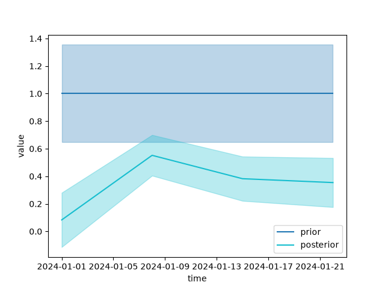

User Guide#
This guide takes fips’s objects one at a time, in the order a problem uses them, and says what each is for before how to call it. A First Problem solves one problem from start to finish; Terminology defines the words.
Spaces and vectors#
Every number in fips has a label, and fips matches numbers by their labels,
never by their position. A Space is the labels of a state, of
the observations, or of one axis of a matrix: an ordered set of named
blocks, each labeled by its own pandas index. A state can have a flux
block labeled by (time, lat, lon) and a bias block labeled by
site; the observations a station block and a satellite block.
A Vector is values on a space: a prior, the observations, an
estimate. It comes from a Series (one block) or from several (one per block):
In [1]: import numpy as np
In [2]: import pandas as pd
In [3]: import fips
In [4]: cells = pd.Index([1, 2, 3], name="cell")
In [5]: sites = pd.Index(["north", "south"], name="site")
In [6]: prior = fips.Vector.from_blocks(
...: {"flux": pd.Series([1.0, 2.0, 0.5], index=cells), "bias": pd.Series(0.0, index=sites)},
...: name="prior",
...: )
...:
In [7]: prior.to_series()
Out[7]:
block cell site
flux 1 nan 1.0
2 nan 2.0
3 nan 0.5
bias NaN north 0.0
south 0.0
Name: prior, dtype: float64
In [8]: prior["flux"].to_series()
Out[8]:
block cell
flux 1 1.0
2 2.0
3 0.5
Name: prior, dtype: float64
Together, the blocks are one pandas.MultiIndex with the block
level first (prior.space.index). A level that one block has and another
lacks is missing (NaN) on the other’s rows, and Space is the one
place that adds and removes those levels: prior["flux"] comes back labeled
as it was given, integer cells and all. prior.space.select("flux") gives a
block’s labels, and to_xarray() a DataArray on the levels of
one block (a Dataset for several).
Labels are kept as they are given: fips does not convert strings to numbers or
round floats. Duplicate, missing (NaN) and unnamed labels raise a
ValueError that names them. Labels that should match only after
rounding are rounded on purpose, with round_labels() (also
on a Space and an Operator).
A vector is read-only: a new value is a new vector. align()
puts a vector in the order of a space with the same labels, and
combine_first() fills the labels one vector lacks from
another (the estimate of part of the state, completed by the prior).
Operators#
An Operator is a matrix with a space on each axis: the forward
operator (observations by state), an aggregation, a gain. Its matrix is kept
in the cheapest form that is exact (a dense array, a SciPy sparse matrix, a
diagonal, Kronecker factors; see Linear Algebra), and the labels are
beside it. There are three ways in:
Operator(matrix, rows, cols)labels a matrix you have, by position: its rows arerows’s labels in order, its columnscols’s. A SciPy sparse matrix stays sparse.Operator.from_framereads a labeled DataFrame, dense or with pandas-sparse columns.Operator.from_blocksassembles one from its blocks, each named by its row block and its column block: a DataFrame, or a tuple(matrix, row_labels, col_labels). Given the spaces (rows=,cols=), it places each block by its labels: a label the block has no entry for is zero, as a pair of blocks left out is, and a label the space does not have raises.
In [9]: obs_id = pd.Index(["o1", "o2", "o3"], name="obs_id")
In [10]: obs = fips.Vector.from_series(pd.Series([2.0, 3.5, 1.0], index=obs_id), block="co2")
In [11]: H = fips.Operator.from_blocks(
....: {
....: ("co2", "flux"): pd.DataFrame(np.eye(3), index=obs_id, columns=cells),
....: ("co2", "bias"): pd.DataFrame([[1.0, 0.0], [1.0, 0.0], [0.0, 1.0]], index=obs_id, columns=sites),
....: },
....: rows=obs.space,
....: cols=prior.space,
....: )
....:
In [12]: H.to_frame()
Out[12]:
block flux bias
cell 1 2 3 NaN
site nan nan nan north south
block obs_id
co2 o1 1.0 0.0 0.0 1.0 0.0
o2 0.0 1.0 0.0 1.0 0.0
o3 0.0 0.0 1.0 0.0 1.0
In [13]: (H @ prior).to_series()
Out[13]:
block obs_id
co2 o1 1.0
o2 2.0
o3 0.5
dtype: float64
H @ vector is a vector, H @ other an operator, and + and - add
operators; each first matches the labels they meet on, in any order, and a
label on one side only raises. H["co2", "flux"] is one block, H.T the
transpose, and to_frame() the dense DataFrame.
Sparse matrices. A forward operator from atmospheric transport is mostly
zeros. An operator built
from a scipy.sparse matrix (or from a DataFrame with pandas-sparse
columns) keeps it sparse, and so do the products and sums that stay mostly
zeros: a diagonal or sparse matrix times a sparse one is sparse, and a product
is dense once more than a quarter of its entries are filled, or when either
side is dense. The forward operator, the prior covariance and the observation
covariance can each be dense or sparse:
In [14]: import scipy.sparse as sp
In [15]: J = sp.random(3, 3, density=0.4, random_state=0, format="csr")
In [16]: sparse_H = fips.Operator(J, obs.space, fips.Space({"flux": cells}))
In [17]: sparse_H.data
Out[17]: <3x3 SparseOperator with dtype=float64>
A large product of a sparse matrix and a dense one (\(H S_0 H^T\) with a
dense \(S_0\) has one) runs on threads, each multiplying a block of the
sparse matrix’s rows, and gives the same numbers as one thread, bit for bit. It
uses the CPUs the process may run on (a Slurm job’s --cpus-per-task, not the
node’s), and no more than OMP_NUM_THREADS when that is set, as NumPy’s BLAS
does: OMP_NUM_THREADS=1 keeps it on one thread.
Covariances and covariance models#
A Covariance is a symmetric operator from a space to itself:
the prior covariance \(S_0\) or the observation covariance \(S_z\). It
adds what a covariance needs: its variances,
solve(), logdet(),
quadratic_form() (of its inverse) and
sqrt(), each done the way its form makes cheap.
Independent errors are a diagonal, kept as its variances, one number per
element: Covariance.diagonal takes a scalar
(one variance for every element), an array (one each) or a vector. Independent
parts go side by side with Covariance.block_diag, each keeping its form:
In [18]: S_0 = fips.Covariance.block_diag(
....: fips.Covariance.diagonal(0.25, fips.Space({"flux": cells})),
....: fips.Covariance.diagonal(0.01, fips.Space({"bias": sites})),
....: )
....:
In [19]: S_0.variances.to_series()
Out[19]:
block cell site
flux 1 nan 0.25
2 nan 0.25
3 nan 0.25
bias NaN north 0.01
south 0.01
Name: variance, dtype: float64
In [20]: S_0.data
Out[20]: <5x5 DiagonalOperator with dtype=float64>
Covariance models. Correlated errors are usually written as a correlation model and the standard deviations. A correlation model says how correlated two labels are from their values on some levels:
Exponential,GaussianandMaterndecay with the distance along their levels: a datetime level with a time scale (Exponential("time", "30D")), numeric levels as a straight line, or latitude and longitude on the Earth (metric="haversine", the great-circle distance in km;metric="chordal", through the Earth, which a Gaussian or a Matérn needs to stay positive-definite);Constantis 1 everywhere, andIndependentthe identity (1 for a label with itself, 0 otherwise);Kroneckermultiplies models on separate levels, kept as its factors.
model.with_std(std) is the covariance. With the standard deviations as a
number, or a pandas Series on the block’s labels (lined up by label), it is a
covariance model, which build(space) puts on a space; a plain array is
refused, since it has no labels. A Problem builds its
covariance models on the prior’s or the observations’ space itself. With a
Vector of standard deviations, the space is known and it is a
Covariance at once. Covariance models add (a + b), and
block_diag() takes them by block name.
within= keeps a model inside groups of labels and makes it zero between
them, as a sparse matrix: within=["site", "obs_time.date"] correlates the
observations of one site on one day only ("obs_time.date" is the date of
the obs_time level), and within="time.hour" the same hour of day only.
Here an independent instrument error plus an error correlated over 2 hours
within a site’s day:
In [21]: hours = pd.date_range("2024-01-01 21:00", periods=4, freq="h")
In [22]: labels = pd.MultiIndex.from_product([["A", "B"], hours], names=["site", "obs_time"])
In [23]: obs_cov = fips.Independent().with_std(0.1) + fips.Exponential(
....: "obs_time", "2h", within=["site", "obs_time.date"]
....: ).with_std(0.5)
....:
In [24]: obs_cov
Out[24]: Independent().with_std(0.1) + Exponential(levels=('obs_time',), within=('site', 'obs_time.date'), scale=Timedelta('0 days 02:00:00'), metric='euclidean').with_std(0.5)
In [25]: obs_cov.build(fips.Space({"co2": labels})).dense().round(3)
Out[25]:
array([[0.26 , 0.152, 0.092, 0. , 0. , 0. , 0. , 0. ],
[0.152, 0.26 , 0.152, 0. , 0. , 0. , 0. , 0. ],
[0.092, 0.152, 0.26 , 0. , 0. , 0. , 0. , 0. ],
[0. , 0. , 0. , 0.26 , 0. , 0. , 0. , 0. ],
[0. , 0. , 0. , 0. , 0.26 , 0.152, 0.092, 0. ],
[0. , 0. , 0. , 0. , 0.152, 0.26 , 0.152, 0. ],
[0. , 0. , 0. , 0. , 0.092, 0.152, 0.26 , 0. ],
[0. , 0. , 0. , 0. , 0. , 0. , 0. , 0.26 ]])
A Kronecker model is kept as its factors: its covariance holds a
KroneckerOperator, which never forms the
\(n \times n\) matrix. Each factor is evaluated once, on the unique values
of its levels, and the labels can be any subset of the product, in any order:
In [26]: state = pd.MultiIndex.from_product(
....: [pd.date_range("2024-01-01", periods=4, freq="7D"), [40.5, 40.6], [-112.0, -111.9]],
....: names=["time", "lat", "lon"],
....: )
....:
In [27]: prior_cov = fips.Kronecker(
....: fips.Exponential("time", "14D"),
....: fips.Exponential(["lat", "lon"], 10.0, metric="haversine"),
....: ).with_std(0.5)
....:
In [28]: S = prior_cov.build(fips.Space({"flux": state}))
In [29]: [factor.shape for factor in S.data.factors]
Out[29]: [(4, 4), (4, 4)]
A new kind of correlation is a subclass of
CorrelationModel: a frozen dataclass with its
levels and a correlation(coords) method.
The problem#
A Problem is the question: the prior and its covariance, the
observations and theirs, the forward operator, and an optional offset. It
checks the labels once, when it is built, by an exact join: the forward
operator’s rows and the observation covariance must have exactly the labels of
the observations, its columns and the prior covariance exactly those of the
prior, in any order. A block or a label on one side only raises a
ValueError naming it, so nothing is filled with zeros and nothing is
rounded without your asking. Each input is then held in the order of the
prior’s and the observations’ spaces, in its own form.
The offset \(c\) is the part of the observations the state does not
explain (a background): a vector on the observations’ space, or one number.
predict() is \(H x + c\) for any state, such as the
prior or a truth:
In [30]: problem = fips.Problem(
....: prior=prior,
....: prior_cov=S_0,
....: obs=obs,
....: obs_cov=fips.Independent().with_std(0.2),
....: forward=H,
....: offset=0.5,
....: )
....:
In [31]: problem.predict(problem.prior).to_series()
Out[31]:
block obs_id
co2 o1 1.5
o2 2.5
o3 1.0
dtype: float64
A problem is not changed by a solve, and makes other problems from itself.
Aggregated observations. Problem.aggregate
gives the problem of aggregated observations: the observations, the forward
operator, the observation covariance and the offset each go through one
aggregation \(W\) (\(W z\), \(W H\), \(W S_z W^T\),
\(W c\)). fips.aggregate.mean() and fips.aggregate.sum() build
\(W\) from the labels, grouped by levels, time bins or a mapping. Here,
hourly observations at two sites become daily means:
In [32]: rng = np.random.default_rng(0)
In [33]: hours = pd.date_range("2024-01-01", periods=48, freq="h")
In [34]: labels = pd.MultiIndex.from_product([["A", "B"], hours], names=["site", "obs_time"])
In [35]: ch4 = fips.Vector.from_series(pd.Series(rng.normal(2.0, 0.1, 96), index=labels), block="ch4")
In [36]: flux = fips.Vector.from_series(pd.Series(1.0, index=pd.Index(["c0", "c1", "c2"], name="cell")), block="flux")
In [37]: hourly = fips.Problem(
....: prior=flux,
....: prior_cov=fips.Independent().with_std(0.5),
....: obs=ch4,
....: obs_cov=fips.Independent().with_std(0.05),
....: forward=fips.Operator(rng.uniform(0, 0.1, (96, 3)), ch4.space, flux.space),
....: )
....:
In [38]: daily = hourly.aggregate(
....: fips.aggregate.mean(ch4.space, by=["site", pd.Grouper(level="obs_time", freq="1D")])
....: )
....:
In [39]: daily.obs.to_series()
Out[39]:
block site obs_time
ch4 A 2024-01-01 1.988586
2024-01-02 2.025302
B 2024-01-01 2.012840
2024-01-02 2.020259
dtype: float64
Offsets the data should decide. An offset that is not known (a background
that drifts, a calibration bias) is a block of the state instead:
fips.offset_block() gives one offset per group of observations, zeros as
their prior, and the forward block that adds each offset to its observations.
Their prior covariance is any model on their labels; here the days of a site
are correlated:
In [40]: days = pd.interval_range(hours[0], periods=2, freq="1D", closed="left", name="obs_time")
In [41]: offsets, H_offsets = fips.offset_block(ch4.space, by=[days, "site"])
In [42]: with_offsets = fips.Problem(
....: prior=fips.Vector.from_blocks({"flux": flux, "offset": offsets}),
....: prior_cov=fips.Covariance.block_diag(
....: flux=fips.Independent().with_std(0.5),
....: offset=fips.Exponential("obs_time", "2D", within="site").with_std(0.1),
....: ),
....: obs=ch4,
....: obs_cov=fips.Independent().with_std(0.05),
....: forward=fips.Operator.from_blocks(
....: {("ch4", "flux"): hourly.forward, ("ch4", "offset"): H_offsets["ch4", "offset"]}
....: ),
....: )
....:
In [43]: fips.solve(with_offsets).estimate["offset"].to_series().round(3)
Out[43]:
block obs_time site
offset 2024-01-01 A 1.831
B 1.838
2024-01-02 A 1.864
B 1.876
Name: estimate, dtype: float64
Part of the state held at its prior. Problem.restrict solves for part of the state (cells no observation
sees well are left out) and holds the rest at its prior: their contribution
\(H x_0\) moves into the offset. combine_first() puts
the estimate back on the whole state:
In [44]: small = hourly.restrict(fips.Space({"flux": pd.Index(["c0", "c1"], name="cell")}))
In [45]: fips.solve(small).estimate.combine_first(hourly.prior).to_series().round(3)
Out[45]:
block cell
flux c0 14.828
c1 17.424
c2 1.000
Name: estimate, dtype: float64
Solving and the posterior#
fips.solve() solves a problem with a method and returns a
Posterior, the answer. The method is "analytic" by default
(the closed-form Gaussian posterior, the one method so far;
fips.available_methods() lists them), and its one option is the
regularization factor gamma. An unknown method or option raises with the
names it knows.
The analytic method factors the problem once, in one of two forms that give
the same posterior. The whitened form works in the observations’ size: it
whitens with the Cholesky factor of \(S_z\) (or the square root of its
diagonal), so \(S_z\) must be positive-definite, and factors the
\(m \times m\) matrix \(H S_0 H^T\) in that metric. It computes
\(H S_0\) in the forms of \(H\) and \(S_0\) (through the factors of
a Kronecker covariance), and the estimate, the variances, the DOFS and the
chi-squared from the factors, without forming anything \(n \times n\). The
information form works in the state’s size: it factors an
\(n \times n\) matrix built from \(H\), a square root of \(S_0\) and
\(S_z^{-1}\), and forms no \(m \times m\) matrix of its own (a dense
\(S_z\) is applied through its Cholesky factor, a Kronecker one through
its factors). It is used when there are fewer state elements than
observations and \(S_z\) is dense, diagonal, sparse, block diagonal or
Kronecker; otherwise the whitened form. In both, the full posterior
covariance (post.cov()), the gain and the averaging kernel are formed
only when they are read, once each. fips.solve() factors that matrix
by Cholesky at its gamma, the cheapest way to solve at one gamma; the
first post.with_gamma eigendecomposes it, which holds at any gamma,
and keeps it, so a sweep over gamma pays for one eigendecomposition.
In [46]: rng = np.random.default_rng(1)
In [47]: obs_labels = pd.MultiIndex.from_product([["conc"], range(15)], names=["block", "obs_id"])
In [48]: forward = fips.Operator.from_frame(
....: pd.DataFrame(rng.uniform(0, 1, (15, len(state))), index=obs_labels, columns=state),
....: col_block="flux",
....: )
....:
In [49]: problem = fips.Problem(
....: prior=fips.Vector.from_series(pd.Series(1.0, index=state), block="flux"),
....: prior_cov=prior_cov,
....: obs=fips.Vector.from_series(pd.Series(rng.normal(3.0, 1.0, 15), index=obs_labels)),
....: obs_cov=fips.Independent().with_std(0.7),
....: forward=forward,
....: )
....:
In [50]: post = fips.solve(problem)
In [51]: post.variances.to_series().head()
Out[51]:
block time lat lon
flux 2024-01-01 40.5 -112.0 0.134190
-111.9 0.143158
40.6 -112.0 0.117721
-111.9 0.124034
2024-01-08 40.5 -112.0 0.096764
Name: variance, dtype: float64
The posterior of aggregates. An aggregation \(W\) of the state (one row
per total or mean) gives the posterior covariance of the aggregates,
post.cov(W) (\(W \hat{S} W^T\)), and their averaging kernel,
post.averaging_kernel(W) (\(W A W^*\), with \(W^*\) the
pseudo-inverse of \(W\)), neither forming the \(n \times n\)
matrices. Here, the total flux of each week:
In [52]: W = fips.aggregate.sum(problem.prior.space, by="time")
In [53]: post.cov(W).to_frame().round(4)
Out[53]:
block flux
time 2024-01-01 2024-01-08 2024-01-15 2024-01-22
block time
flux 2024-01-01 0.6225 -0.0449 -0.2583 -0.2736
2024-01-08 -0.0449 0.3485 -0.1119 -0.1523
2024-01-15 -0.2583 -0.1119 0.4141 -0.0257
2024-01-22 -0.2736 -0.1523 -0.0257 0.5088
In [54]: post.averaging_kernel(W).dense().diagonal().round(3)
Out[54]: array([0.488, 0.549, 0.488, 0.586])
Another gamma or other observations, without a new solve. The factors
depend neither on gamma nor on the values of the observations, so
post.with_gamma(g) is fips.solve(problem, gamma=g) at the cost of a few
products, and post.with_data(obs) the posterior of other observations at
the same labels (a bootstrap, synthetic observations of a known truth). A sweep over gamma factors once, and the rows of
summary() stack:
In [55]: pd.concat([post.with_gamma(g).summary() for g in (0.25, 1.0, 4.0)], ignore_index=True)
Out[55]:
gamma n_state n_obs ... r2 rmse uncertainty_reduction
0 0.25 16 15 ... 0.082316 0.888671 0.217130
1 1.00 16 15 ... 0.522039 0.703456 0.314634
2 4.00 16 15 ... 0.727697 0.522095 0.446752
[3 rows x 9 columns]
Checking the covariances. desroziers() compares the
observation error variances the residuals diagnose with those the solve used,
per observation or averaged over groups; reduced_chi2
is near 1 when the covariances are right; leverage()
says which observations weigh most on a state.
Synthetic truth and observations#
To test an inversion on data whose answer you know, make the data from the
problem. Problem.simulate returns (truth,
obs), two vectors: a truth drawn from the prior, \(x \sim N(x_0, S_0)\),
and the observations it would give, \(z = H x + c + e\) with \(e \sim
N(0, S_z)\); predict() is the same without the error. Its
draws are Covariance.sample, which draws from
\(N(0, S)\) without forming \(S\) where its form has a cheaper root.
rng is a seed or a numpy.random.Generator (one generator passed to
every call gives independent trials), and a truth= of your own (another
inventory, 1.5 times the prior, on the prior’s labels in any order) replaces
the draw. A trial is the solve on other data, post.with_data(obs), one
product, so a Monte Carlo is a loop you write. If the inversion is honest, the
95% interval of each total holds the truth in about 95% of the trials:
In [56]: rng = np.random.default_rng(0)
In [57]: sd = np.sqrt(post.cov(W).variances.values) # what the posterior claims
In [58]: inside = []
In [59]: for _ in range(500):
....: truth, obs = problem.simulate(rng)
....: estimate = post.with_data(obs).estimate
....: inside.append(np.abs((W @ estimate).values - (W @ truth).values) <= 1.96 * sd)
....:
In [60]: np.mean(inside, axis=0).round(2)
Out[60]: array([0.97, 0.94, 0.94, 0.96])
The estimate is linear in the observations, so the loop has an exact answer:
post.recovery gives, for each total, the
mean and spread of the error and the probability that the interval holds the
truth, without sampling. post.recovery(world, W=W) does the same for data
from another world on the same labels, and truth= fixes the truth, as in
simulate:
In [61]: post.recovery(W=W)[["truth", "estimate", "std", "posterior_std", "coverage"]].round(3)
Out[61]:
truth estimate std posterior_std coverage
block time
flux 2024-01-01 4.0 4.0 0.789 0.789 0.95
2024-01-08 4.0 4.0 0.590 0.590 0.95
2024-01-15 4.0 4.0 0.643 0.643 0.95
2024-01-22 4.0 4.0 0.713 0.713 0.95
The data come from a world, and the inversion you run on them has its own assumptions. There are four kinds of world:
The problem itself:
problem.simulate(rng), as above, tests that the inversion is honest.A chosen truth:
problem.simulate(rng, truth=inventory)tests how much of another inventory the inversion recovers.Another observing system: a separate
Problemwith other observations and its own solve, compared on the uncertainty of the totals.One input wrong: the
Problemyour own code builds with one input changed (a background, the mismatch), thenworld.simulate(rng)andpost.with_data(obs), which solves its data with your assumptions.
Plotting#
fips draws one plot, plot_comparison() (the viz
extra): several vectors or Series on one axes, with a band of one standard
deviation from each covariance, and an optional truth. Maps and anything else
are drawn from to_series() and
to_xarray() with pandas, xarray or matplotlib:
In [62]: from fips.visualization import plot_comparison
In [63]: weekly = fips.aggregate.mean(problem.prior.space, by="time")
In [64]: fig, ax = plot_comparison(
....: (weekly @ problem.prior).to_series().droplevel("block").rename("prior"),
....: (weekly @ post.estimate).to_series().droplevel("block").rename("posterior"),
....: errors=[weekly @ problem.prior_cov @ weekly.T, post.cov(weekly)],
....: )
....:


Example: a flux inversion#
fips knows no science domain: an atmospheric flux inversion is a
Problem whose state has a flux block and whose observations
a concentration block (any names will do), solved with fips.solve()
like any problem, with its blocks read by name:
import fips
problem = fips.Problem(
prior=fips.Vector.from_series(prior_fluxes, block="flux"),
prior_cov=prior_cov, # a Covariance or a covariance model
obs=fips.Vector.from_series(concentrations, block="concentration"),
obs_cov=obs_cov, # a Covariance or a covariance model
forward=jacobian, # an Operator: the transport Jacobian
offset=background, # a Vector on the observations, or a number
)
post = fips.solve(problem)
post.estimate["flux"].to_xarray() # posterior fluxes on (time, lat, lon)
post.cov()["flux", "flux"] # their posterior covariance
post.modeled_obs["concentration"] # H x̂ + c
problem.predict(problem.prior) # H x₀ + c
post.summary() # DOFS, chi-squared, R², RMSE, ... as one row
For a STILT Jacobian, PYSTILT sums the
footprints onto your flux grid and time bins, as a sparse matrix with its row
and column labels. It has columns only for the cells a footprint touched,
while a problem needs the forward operator on exactly the prior’s labels:
Operator.from_blocks places it on the whole
state by its labels, and keeps it sparse:
import stilt
project = stilt.Project("my_project")
J = project.jacobian(project.simulations, grid, time_bins)
jacobian = fips.Operator.from_blocks(
{("concentration", "flux"): (J.data, J.receptors.rename("receptor"), J.columns)},
rows=obs.space,
cols=prior.space,
)
Label the observations and the prior to match the Jacobian’s rows (receptor
ids) and columns ((time, lon, lat)).
Repeated inversions, logging and saving#
A workflow run many times (an inversion per month, a sweep over settings) is a
few functions in your own code: one that builds the Problem from
your settings, then fips.solve():
import pandas as pd
import fips
def build_problem(config) -> fips.Problem:
"""Load the observations and the prior, build H and the covariances."""
...
rows = [fips.solve(build_problem(config)).summary() for config in configs]
table = pd.concat(rows, ignore_index=True)
fips prints nothing. It logs through the standard logging module, under
the fips logger (the solve under fips.methods), and Python shows only
warnings until logging is configured; to see its INFO records:
import logging
logging.basicConfig(level=logging.INFO)
A Problem and a Posterior pickle with the
standard library (pickle.dump(post, file)): a posterior keeps its problem,
its options and what the method kept from the solve, and rebuilds every output
when it is read.